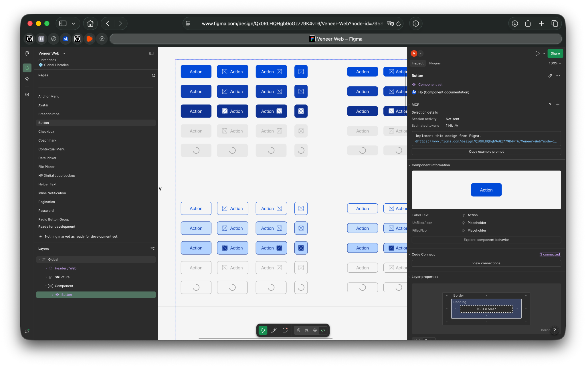
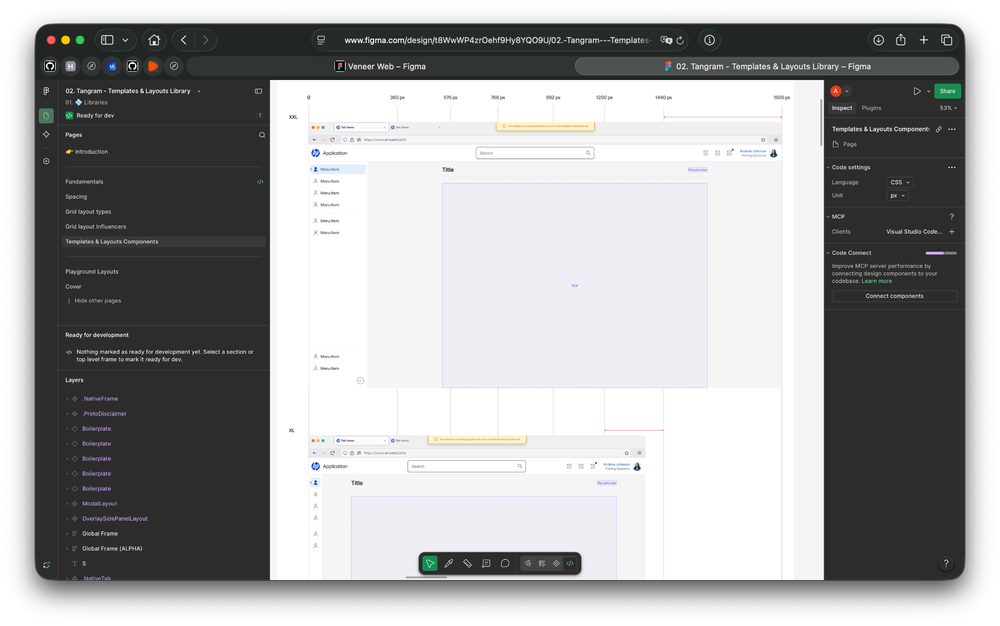
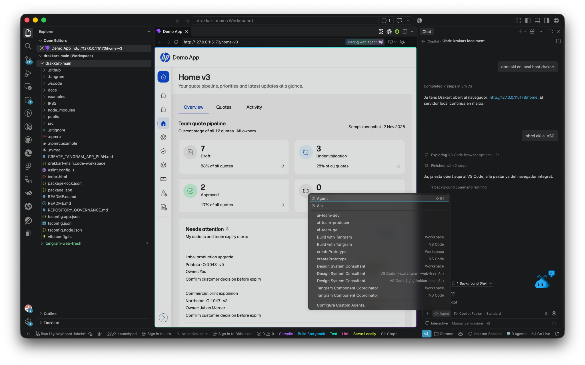

In practice
HP Printing · Tangram
From design
to code.
A working product prototype, built from a Figma starting point and a code-based app starter.
For this IPSS prototype, the team recreated the design in code using components from Veneer and Tangram, together with Tangram templates and policies. The result speaks the same design language as the final product and gives developers a starting point they can review and build on.
From foundations to prototype
HP Printing · Tangram
Veneer provides the global foundations and basic components used across HP.

Tangram builds on Veneer with shared components, templates and guidance for printing products.

Designers can explore product experiences in code, working with shared resources and AI agents.

An interactive IPSS prototype gives designers and engineers a shared starting point to review and build on.
Shared foundations, working code.
Veneer provides HP’s global foundations and basic components. Tangram builds on those foundations with components, templates and policies shaped around the needs of our printing products.
A Figma starting point and an app starter helped the team recreate the experience in code. The prototype brings those shared decisions into an interactive product context, where designers and engineers can review the flow together.
From prototype to product
The resulting code gives Engineering a starting point to review, adapt and integrate. With some HP teams, designers already prototype on a product branch that an engineer can pick up and continue.
Making the system available to agents
We are also making Tangram’s component contracts and guidance available to coding agents through an MCP server. In one recorded test, a lookup for CustomModal returned its properties and 17 Storybook examples. This is part of our exploration into how agents can use the system when creating interfaces.